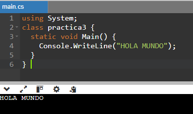

C# es un lenguaje de programación moderno, multiplataforma y de código abierto. Entre sus características están:
Seguridad: Tiene mecanismos para garantizar que los accesos a tipos de datos se realicen correctamente.
Simplicidad: Elimina elementos innecesarios de .NET.
Modernidad: Incorpora elementos que han sido útiles para el desarrollo de aplicaciones.
Extensibilidad: Permite agregar tipos de datos básicos, operadores y modificadores.
Versionable: Se actualizan y mejoran continuamente.
Compatible: Tiene una sintaxis similar a C, C++, Java y otros lenguajes de programación.
Eficiente: Se pueden saltar las restricciones del código utilizando objetos a través de punteros.
Orientado a objetos: Permite crear aplicaciones que se ejecuten en cualquier plataforma.
Multiplataforma: Permite crear aplicaciones que se ejecuten en muchos dispositivos diferentes.
Tipos de datos
Tipos de datos en C#
C# admite varios tipos de datos, entre ellos enteros, punto flotante, booleanos y caracteres.
Tipos enteros
sbyte: Enteros de 8 bits con signo, con valores de -128 a 127.
byte: Enteros de 8 bits sin signo, con valores de 0 a 255.
short: Enteros de 16 bits con signo, con valores de -32,768 a 32,767.
ushort: Enteros de 16 bits sin signo, con valores de 0 a 65,535.
int: Enteros de 32 bits con signo, con valores de -2,147,483,648 a 2,147,483,647.
uint: Enteros sin signo, con valores de 0 a 4,294,967,295.
long: Enteros con signo, con valores de -9,223,372,036,854,775,808 a 9,223,372,036,854,775,807.
ulong: Enteros sin signo, con valores de 0 a 18,446,744,073,709,551,615.
Tipos de punto flotante
float: Con una precisión de 6 a 9 dígitos aproximadamente.
double: Con una precisión de 15 a 17 dígitos aproximadamente.
decimal: Con una precisión de 28-29 dígitos.
Otros tipos
bool: Representa un valor booleano (true o false).
char: Representa un carácter Unicode UTF-16.
Ventajas y desventajas
Ventajas de C#
Versatilidad: C# se puede utilizar para una amplia gama de aplicaciones, como desarrollo de aplicaciones de escritorio, desarrollo web, desarrollo de aplicaciones móviles (con Xamarin) y más.
Lenguaje orientado a objetos: C# admite los principios de programación orientada a objetos, lo que facilita la gestión y estructuración del código, lo que en última instancia conduce a aplicaciones más escalables y fáciles de mantener.
Integración con .NET Framework: C# está rígidamente integrado con el marco .NET, lo que proporciona acceso a una amplia biblioteca de funcionalidades predefinidas para una variedad de tareas, incluido el acceso a bases de datos, redes y E/S de archivos.
Desarrollo multiplataforma: .NET Core permite desarrollar y ejecutar aplicaciones C# en múltiples plataformas, incluidas Windows, macOS y varias distribuciones de Linux.
Tipificación fuerte: C# es un lenguaje tipado estáticamente, lo que significa que la verificación de tipos se realiza en tiempo de compilación, lo que reduce la probabilidad de errores en tiempo de ejecución y mejora la confiabilidad del código.
Recolección de basura: C# cuenta con administración automática de memoria a través de la recolección de basura, lo que ayuda a los desarrolladores a evitar fugas de memoria y errores en la administración manual de memoria.
Programación asincrónica: C# tiene soporte integrado para programación asincrónica a través de características como async/await, lo que hace más fácil escribir aplicaciones escalables y responsivas, especialmente en escenarios que involucran operaciones limitadas por E/S.
Entorno de desarrollo enriquecido: El desarrollo en C# está respaldado por potentes IDE (entornos de desarrollo integrados) como Visual Studio y Visual Studio Code, que permiten a los desarrolladores acceder a características como finalización de código, herramientas de depuración y amplio soporte de complementos.
Desventajas de C#
Dependencia de Windows: Históricamente, C# ha estado estrechamente asociado con el ecosistema de Windows, lo que puede limitar su atractivo para los desarrolladores que trabajan en plataformas distintas a Windows, aunque esto se ha mitigado hasta cierto punto con .NET Core.
Rendimiento: Si bien C# ofrece un buen rendimiento para la mayoría de las aplicaciones, puede no ser tan eficiente como lenguajes de bajo nivel como C o C++. Esto puede ser un problema para aplicaciones que requieren un rendimiento extremadamente alto o acceso al sistema de bajo nivel.
Curva de aprendizaje: C# puede tener una curva de aprendizaje más pronunciada en comparación con lenguajes más simples como Python o JavaScript, particularmente para principiantes que son nuevos en los conceptos de programación orientada a objetos.
Dependencia del proveedor: C# y el marco .NET son desarrollados y mantenidos por Microsoft, lo que puede generar inquietudes sobre el bloqueo del proveedor y la dependencia de tecnología propietaria.
Menos soporte de la comunidad: Si bien C# tiene una comunidad de desarrolladores grande y activa, es posible que no sea tan extensa como las comunidades de otros lenguajes de programación, lo que podría afectar la disponibilidad de bibliotecas de terceros y recursos de soporte impulsados por la comunidad.
Sobrecarga en la administración de memoria: Si bien la recolección de elementos no utilizados ayuda a simplificar la administración de memoria, puede generar sobrecarga e imprevisibilidad en el uso de recursos, lo que puede ser un problema para ciertos tipos de aplicaciones con requisitos de rendimiento estrictos.
Impresion de hola mundo

using System;
class Program
{
static void Main()
{
Console.WriteLine("Hola Mundo");
}
}